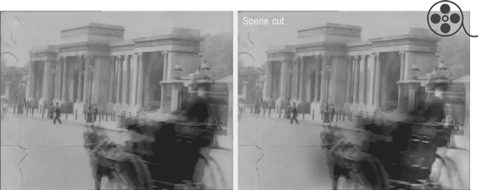
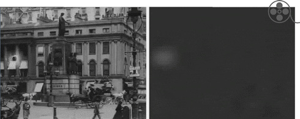
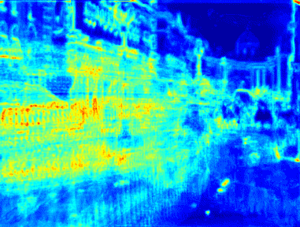
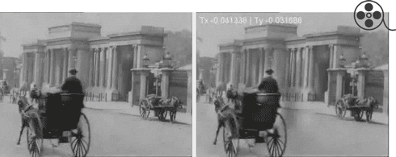
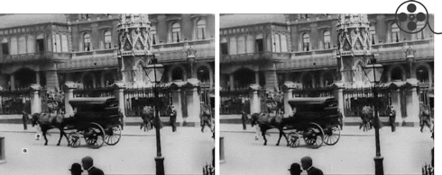

GV15 - Computational Photography and Capture
Lab 3 / CW 1 - Restoration of old Films
Scene cuts
Scene cuts are simply computed by taking the SumSqDistance between two frames normalizing with the number of pixels. This still isn't robust enough as the sequence has frame jumps, which causes large motion and eventually large SSD values. Before computing the SSD down-sample the frame (to reduce the effects of motion) and perform histogram equalization (to cater for the local and global flicker). This produces better scene cut results.
See the following video for scene cut detection and global flicker correct (footage1 - frame 1-2200):

Global (and local) flicker
The main problem of these sequences is more local region flicker than global. I use a method which tackles these two problems together. Considering that each observed value of the image I(x,y) is a function of the real image pixels F(x,y) - one can argue that it can be modelled simply by a gain function - I(x,y) = a(x,y) * F(x,y). Finding this gain is non-trivial as it is a function of many factors (including noise). Nonetheless this gain can be estimated by looking at pixel values temporally. This algorithm divides the frame into blocks and first estimates the mean values of each block in each frame. The second step in this algorithm is that each block's mean m_n in the frame is compared to blocks in temporally close frames. The weighted mean of all the blocks' mean is computed as m_w. The gain is considered to be m_n/m_w. After the algorithm gets gains for all the blocks, the gains for all the pixels are computed in by spline 2D interpolation. 1/gain is used to normalized each pixel. In evaluation, the only problem this algorithm has of halos around moving object - but in lieu we gain temporally local and global flicker correction.
See the video above for flicker correction using this method. The video below shows the gain estimated for each pixel (footage1 - frame 1-2200):

Camera Shake
I compute camera shake as a three step process. The first step involves identifying regions which have motion sans the camera motion. The second step is to compute the best possible explanation for camera shake in those regions where there is no other motion. The third step is to average out the motion in the regions and align back the frame. The algorithm does this by computing the global flow between frame
f_{n-1} and f_n [1]. Like optical flow, global flow also aims to compute flow from image derivatives; but unlike optical flow, global flow only computes one affine matrix which is the best least squares solution for the overcontrained problem. For simplicity, I suppose that the camera shake only results from translatory motion (although there are few cases of slight rotation with translation). Although this would work perfectly well in planar static scenes, our footage is quite removed from such contraints. Hence this algorithm first notes where motion in the sscene occurs (due to cars, pedestrians, etc.) so that they can be factored out while computing the dominant ego motion. This is simply done by a pre-processing step where, using frame difference, the algorithm finds out large areas A_g in the frame which have little motion. See the following example image of sum of frame differences:

Now the global flow is only computed on these set of areas A_g - while the motion areas are ignored. Since we will get individual affine transformation matrices for each area, we will simply weigh their translations according to the size of the original area. This ensures that global flow errors occuring from smaller regions do not seep through to the final translation. Eventually each translation helps us adjust the output frame. Evalution shows that the noisee causes spurious shakes, yet it tries to keep the overall pose of the camera. Some regularization here might help.
The following is the camera shake correction (footage1 - frame 21-406):
Blotches
I use a method to fix blotches, which is a two step - identification and fixing - process. First the identification of blotch region takes place. This is tricky since both motion ghosting and incorrect camera shake can confuse an algorithm in locating the blotch regions. The main argument of this algorithm is that blotches don't move spatially rather just move temporally. Another feature of blotches are they are short-lived (usually 3-4 frames). So taking this information in account, this algorithm uses two approaches to detect blotches: it sums differenced frames in a small window (5 frames) and identifies regions which have gone through extensive change through the window period; it computes the image derivatives - fx, fy, ft - and identifies regions which have strong temporal gradient and weak fx and fy components. Once the blotch regions are found, they are fixed by filling in median values from frames f_{n-3}, f_{n-2}, f_{n+2}, f_{n+3}.
See the following video for blotch correction done after flicker adjustments (footage1 - frame 1-2200):

_______________________________________________________________________________
[1] James R. Bergen, P. Anandan, Keith J. Hanna, Rajesh Hingorani: "Hierarchical Model-Based Motion Estimation," ECCV 1992: 237-252